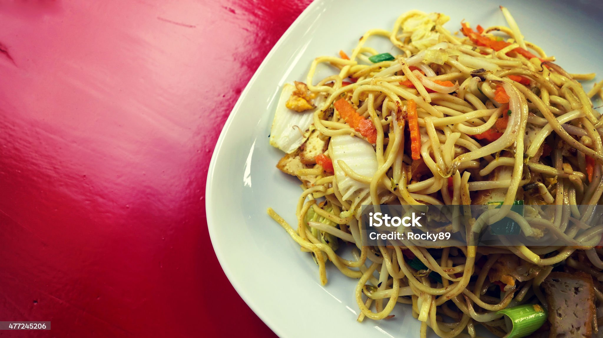

Home
Chicken Marsala
Chicken and Rice Soup
Tofu Lo-Mein
Tofu Lo-Mein

Description
Lo-Mein noodles, top-tier noodle. Beats spaghetti in hand to hand combat on the daily.
I would personally would kill for good lo-mein. Its got veggie, its got pasta,
its got protein (if tofu counts).
Ingredients
- lo mein noodles
- 2 ½ tablespoons
- 1 teaspoon ground ginger
- ½ cup soy sauce
- ½ cup teriyaki sauce
- ½ brown sugar
- 1 stalk green onion
- 1 teaspoon sesame seeds (or to taste)